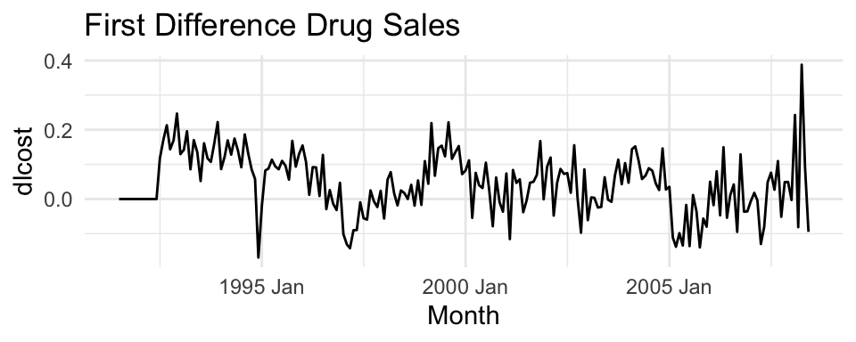

Set 5 State Space Models
An alternate framework for time series modeling is the state space model. This model contains a lot of depth and flexibility. For additional model details, see this resource. These models are based on a decomposition of the series into a number of components, each of which may be accompanied by error terms (and thus, uncertainty). The simplest model is the local level model.
5.1 Local Level Model
In this model,
\[\begin{align} y_t &= \mu_t + \epsilon_t \\ \mu_{t+1} &= \mu_{t} + \eta_t, \end{align}\]
where \(\epsilon_t \sim N(0, \sigma^2_{\epsilon})\) and \(\eta_t \sim N(0, \sigma^2_{\eta})\). The idea of this model is that the observations \(y\) consist of noisy measurements (observation error) of an underlying random walk.
What is the estimate for \(\mu_t\) when \(\text{Var}(\eta_t) = 0\)? How about when \(\text{Var}(\epsilon_t) = 0\)?
5.1.1 Likelihood Function
We will first discuss the estimation of the parameters \((\sigma^2_{\epsilon},\sigma^2_{\eta})\) using maximum likelihood estimation.
\[\begin{align} p(y_1, \ldots y_n | \sigma^2_{\epsilon},\sigma^2_{\eta}) &= \prod_{t=1}^T p(y_t | y_{1:t-1}, \sigma^2_{\epsilon},\sigma^2_{\eta}) \end{align}\]
Each observation \(y_t\) given the past observations and states follows a normal distribution where,
\[\begin{align} y_t | y_{1:t-1} \sim N( E(\mu_t | y_{1:t-1}), Var(\mu_t | y_{1:t-1}) + \sigma^2_\epsilon ) \end{align}\]
5.1.2 Kalman Filter
The Kalman Filter provides a recursive way to estimate the state, \(E(\mu_t | y_{1:t-1})\), and its variance, \(Var(\mu_t | y_{1:t-1})\), recursively using the observations \(y_t\).
We will start by defining the prediction distribution as,
\[\begin{align} p(\mu_t | y_{1:t-1}) \sim N(a_t, p_t) \end{align}\]
The Kalman Filter takes this as given and then recursively updates
\[\begin{align} p(\mu_t | y_{1:t}) &\sim N(a_{t|t}, p_{t|t}) \\ p(\mu_{t+1} | y_{1:t}) &\sim N(a_{t+1}, p_{t+1}) \end{align}\]
To find the first distribution, \(p(\mu_t | y_{1:t})\), we define \(v_t = y_t - a_t\) and re-write,
\[\begin{align} p(\mu_t | y_{1:t}) &= p(\mu_t | y_{1:t-1}, v_t) \\ &= \frac{ p(\mu_t , v_t| y_{1:t-1})} { p(v_t| y_{1:t-1}) } \\ &= \frac{ p(\mu_t | y_{1:t-1}) p(v_t| y_{1:t-1} , \mu_t )} { p(v_t| y_{1:t-1}) } \\ &\equiv N(a_{t|t}, p_{t|t}), \end{align}\]
where
\[\begin{align} a_{t|t} &= a_t + k_t v_t \\ p_{t|t} &= k_t \sigma^2_\epsilon \\ k_t &= \frac{p_t}{p_t + \sigma^2_\epsilon} \end{align}\]
And, finally,
\[\begin{align} p(\mu_{t+1} | y_{1:t}) \sim N(a_{t|t}, p_{t|t} + \sigma^2_{\eta}) \end{align}\]
# Define the log-likelihood function for the Local Level Model
llm_log_likelihood <- function(params, y) {
# Extract variance parameters from params
sigma_eta2 <- params[1]
sigma_eps2 <- params[2]
# Number of observations
T <- length(y)
a_t_t <- 0 # Initial state estimate
P_t_t <- 10000 # Large initial variance (diffuse prior)
# Log-likelihood accumulator
log_likelihood <- 0
for (t in 1:T) {
# Prediction step
a_t <- a_t_t
P_t <- P_t_t + sigma_eta2
# Observation prediction
F_t <- P_t + sigma_eps2
v_t <- y[t] - a_t # Prediction error
# Update step
K_t <- P_t / F_t # Kalman gain
a_t_t <- a_t + K_t * v_t
P_t_t <- (K_t) * sigma_eps2
# Contribution to log-likelihood
log_likelihood <- log_likelihood - 0.5 * log(2 * pi * F_t) - 0.5 * (v_t^2 / F_t)
}
return(-log_likelihood) # Negative log-likelihood for minimization
}
# Example usage
# Simulate some data for testing
set.seed(123)
T <- 10000
y <- numeric(T)
true_sigma_eta2 <- 1
true_sigma_eps2 <- 2
x <- numeric(T)
x[1] <- rnorm(1, 0, sqrt(100))
for (t in 2:T) {
x[t] <- x[t-1] + rnorm(1, 0, sqrt(true_sigma_eta2))
}
y <- x + rnorm(T, 0, sqrt(true_sigma_eps2))
# Optimize the log-likelihood
optim_result <- optim(
par = c(1, 1), # Initial guesses for sigma_eta2 and sigma_eps2
fn = llm_log_likelihood,
y = y,
method = "L-BFGS-B",
lower = c(1e-6, 1e-6) # Ensure variances are positive
)
# Display results
cat("Estimated sigma_eta2:", optim_result$par[1], "\n")## Estimated sigma_eta2: 1.017554## Estimated sigma_eps2: 1.995769
5.1.3 Specific Problem
For the more general state space model we will use the package bsts.
For our problem, we will introduce the covariate into the measurement equation. Our model is,
\[\begin{align} y_t &= \mu_t + \beta x_t + \epsilon_t \\ \mu_t &= \mu_{t-1} + \eta_t. \end{align}\]
We will use the package bsts to fit this model. The first thing to do when specifying a bsts package is the specify the contents of the latent state vector \(\mu_t\)